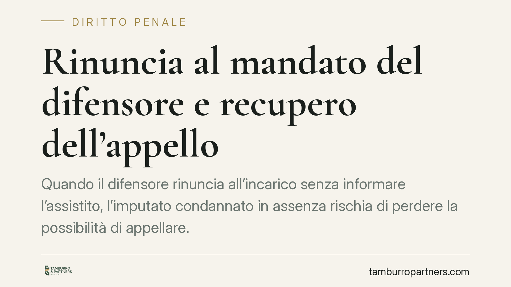

Rinuncia al mandato del difensore e recupero dell'appello
Quando il difensore rinuncia all'incarico senza informare l'assistito, l'imputato condannato in assenza rischia di perdere la possibilità di appellare. Un orientamento della Cassazione penale riconduce questa situazione al caso fortuito, aprendo alla restituzione nel termine. Un tema delicato dopo la Riforma Cartabia, che ha irrigidito i requisiti dell'impugnazione per chi è giudicato assente.

Il fatto
Il problema si pone con una certa frequenza: un imputato affida la propria difesa a un avvocato di fiducia; l'avvocato, a un certo punto, rinuncia al mandato ma non comunica la decisione al cliente. La sentenza di condanna viene emessa in assenza dell'imputato, che resta ignaro sia del procedimento sia dei termini per impugnare.
Quando l'interessato scopre la condanna, i termini per proporre appello sono ormai scaduti. La domanda è semplice: può recuperare l'impugnazione perduta per una circostanza a lui non imputabile?
Inquadramento normativo
La materia va letta alla luce della Riforma Cartabia (D.Lgs. 150/2022), che ha ridisegnato il processo in assenza e il regime delle impugnazioni.
Il nuovo assetto si regge su più disposizioni coordinate. L'art. 420-bis c.p.p. disciplina i presupposti per procedere in assenza dell'imputato. L'art. 157-ter c.p.p. interviene sulle notificazioni e sulle garanzie di effettiva conoscenza del procedimento. L'art. 581 c.p.p. richiede, per l'imputato giudicato in assenza, il deposito di uno specifico mandato a impugnare rilasciato dopo la pronuncia della sentenza: senza quel mandato, l'appello è inammissibile.
Il recupero del termine passa invece dall'art. 175 c.p.p., che consente la restituzione nel termine quando la decadenza è dovuta a caso fortuito o forza maggiore. Si tratta di un rimedio dai presupposti stringenti: l'onere di dimostrare l'impedimento grava sull'imputato e le tempistiche di attivazione sono rigorose.
Il principio in discussione
Il nodo interpretativo è questo: la rinuncia del difensore non comunicata al cliente può integrare il caso fortuito rilevante ai fini dell'art. 175 c.p.p.?
Secondo un orientamento della Corte di Cassazione penale, la risposta tende all'affermativa. Il ragionamento è lineare. Il difensore ha certamente la facoltà di rinunciare al mandato. Quella facoltà, però, non lo esonera dal dovere di non lasciare l'assistito esposto senza alcun avviso. Se l'imputato ignora la rinuncia, si trova nell'impossibilità materiale di conferire quel mandato specifico a impugnare che l'art. 581 c.p.p. oggi richiede.
Da qui la qualificazione dell'impedimento come caso fortuito: l'imputato non ha potuto attivarsi non per negligenza propria, ma per una circostanza esterna e a lui ignota.
Resta però un punto fermo. La restituzione nel termine non è automatica. L'imputato deve provare di non aver avuto conoscenza effettiva né della rinuncia né della sentenza, e di essersi attivato tempestivamente una volta appresa la condanna.
Implicazioni pratiche
Per chi è stato giudicato in assenza, la lettura coordinata di queste norme ha effetti concreti.
Dopo la Cartabia, l'appello dell'imputato assente richiede un adempimento ulteriore rispetto al passato: il mandato specifico a impugnare. Se la difesa viene meno senza che l'interessato ne sia informato, quel presupposto diventa impossibile da soddisfare in tempo utile.
Il rimedio esiste, ma non è una via agevole. La restituzione nel termine ha presupposti rigorosi e richiede una ricostruzione documentale puntuale: comunicazioni, notifiche, data di effettiva conoscenza. L'esito dipende dalla solidità della prova dell'impedimento, che la legge pone a carico dell'imputato.
Cosa fare in concreto
- Verificare, in caso di dubbi sulla pendenza di un procedimento, lo stato delle notifiche e l'eventuale rinuncia del difensore presso la cancelleria competente.
- Conservare ogni traccia documentale utile a dimostrare la data in cui si è avuta effettiva conoscenza della sentenza.
- Considerare che i termini per l'istanza ex art. 175 c.p.p. decorrono in genere dal momento della conoscenza effettiva: è opportuno non lasciar passare tempo.
- Valutare, con l'assistenza di un difensore, se sussistono i presupposti del caso fortuito e se l'istanza di restituzione è percorribile nel caso specifico.
- Ricordare che nessun esito è garantito: la decisione dipende dalla prova dell'impedimento e dal rispetto delle tempistiche.
Un chiarimento sulle fonti
Il tema è oggetto di un orientamento giurisprudenziale ancora in fase di consolidamento. Chi intenda far valere questo profilo è bene verifichi, con il proprio legale, le pronunce più aggiornate e il coordinamento con la disciplina vigente post Cartabia.
Contributo informativo a cura di Tamburro & Partners Avvocati - Avv. Giuseppe Tamburro. Non costituisce parere legale.
Ogni condominio ha una storia a sé.
Se gestisci un'amministrazione e vuoi un confronto su una specifica questione condominiale, scrivi allo studio. Ti rispondiamo entro un giorno lavorativo.